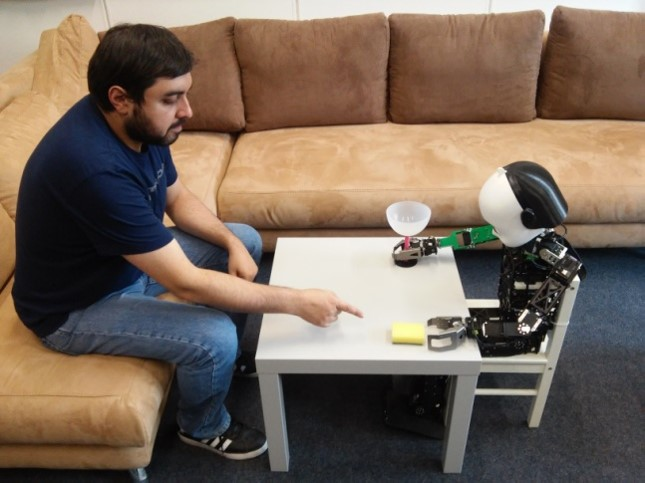

Half-day, in-person workshop; date and venue to be announced
Workshop description:
Reinforcement learning (RL) is increasingly being used to train autonomous agents and robots that interact with people. Recent advances in vision-language-action (VLA) policies and RL-based fine-tuning have further expanded their capabilities. However, an important challenge is ensuring that learned behaviors remain aligned with human intentions, preferences and expectations. Agents may successfully optimize rewards while behaving in ways that humans did not intend, particularly when objectives are incomplete, preferences change or environments are unfamiliar. Recent works studying unintended behaviors, representational misalignment and safety highlight these challenges in both simulation and embodied platforms. This workshop provides an opportunity to bring these communities together to discuss the way forward for human alignment in autonomous systems.
The focus of this workshop is to bring together researchers from reinforcement learning, robotics and human-robot interaction to discuss methods, failure cases and open challenges in human alignment for autonomous systems. The workshop focuses on three interconnected themes:
Important dates: Paper and extended abstract submission deadline: Late February 2027 (tentative; exact date to be announced). Notification of acceptance: Early April 2027 (tentative; exact date to be announced). Camera-ready version: To be announced. Workshop: ICRA 2027; date and venue to be announced. Half day. Three best paper nominees will give six-minute contributed talks. Other accepted works will be presented as posters with one-minute flash talks. Submissions will be peer reviewed through EasyChair. Contributions are non-archival and will be made available on the workshop website.

The focus of this workshop is to bring together researchers from reinforcement learning, robotics and human-robot interaction to discuss methods, failure cases and open challenges in human alignment for autonomous systems. The workshop focuses on three interconnected themes:
- Learning human intentions and preferences through feedback, preferences, demonstrations and human-in-the-loop learning
- Maintaining alignment during learning and deployment, including reward misspecification, reward hacking and alignment of VLA policies
- Interpretability and explainability of agent behavior, including interpretable policies and reward models, communicating intentions and uncertainty, and transparency for human oversight
Important dates: Paper and extended abstract submission deadline: Late February 2027 (tentative; exact date to be announced). Notification of acceptance: Early April 2027 (tentative; exact date to be announced). Camera-ready version: To be announced. Workshop: ICRA 2027; date and venue to be announced. Half day. Three best paper nominees will give six-minute contributed talks. Other accepted works will be presented as posters with one-minute flash talks. Submissions will be peer reviewed through EasyChair. Contributions are non-archival and will be made available on the workshop website.